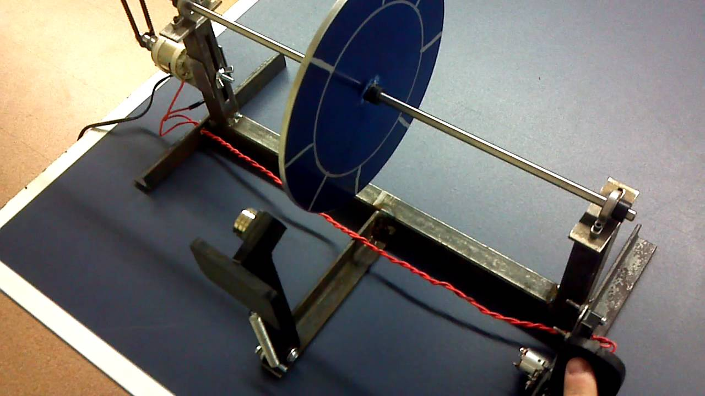

- Brief introduction
-
Eddy currents (also called Foucault currents) are loops of electrical current induced within conductors by a changing magnetic field in the conductor due to Faraday's law of induction. Eddy currents flow in closed loops within conductors, in planes perpendicular to the magnetic field. They can be induced within nearby stationary conductors by a time-varying magnetic field created by an AC electromagnet or transformer, for example, or by relative motion between a magnet and a nearby conductor. The magnitude of the current in a given loop is proportional to the strength of the magnetic field, the area of the loop, and the rate of change of flux, and inversely proportional to the resistivity of the material.
By Lenz's law, an eddy current creates a magnetic field that opposes the change in the magnetic field that created it, and thus eddy currents react back on the source of the magnetic field. For example, a nearby conductive surface will exert a drag force on a moving magnet that opposes its motion, due to eddy currents induced in the surface by the moving magnetic field. This effect is employed in eddy current brakes which are used to stop rotating power tools quickly when they are turned off. The current flowing through the resistance of the conductor also dissipates energy as heat in the material. Thus eddy currents are a cause of energy loss in alternating current (AC) inductors, transformers, electric motors and generators, and other AC machinery, requiring special construction such as laminated magnetic cores or ferrite cores to minimize them. Eddy currents are also used to heat objects in induction heating furnaces and equipment, and to detect cracks and flaws in metal parts using eddy-current testing instruments.
- Eddy current brake
- An eddy current brake, like a conventional friction brake, is a device used to slow or stop a moving object by dissipating its kinetic energy as heat. However, unlike friction brakes, in which the drag force that stops the moving object is provided by friction between two surfaces pressed together, the drag force in an eddy current brake is an electromagnetic force between a magnet and a nearby conductive object in relative motion, due to eddy currents induced in the conductor through electromagnetic induction. A conductive surface moving past a stationary magnet will have circular electric currents called eddy currents induced in it by the magnetic field, as described by Faraday's law of induction. By Lenz's law, the circulating currents will create their own magnetic field which opposes the field of the magnet. Thus the moving conductor will experience a drag force from the magnet that opposes its motion, proportional to its velocity. The kinetic energy of the moving object is dissipated as heat generated by the current flowing through the electrical resistance of the conductor. In an eddy current brake the magnetic field may be created by a permanent magnet, or an electromagnet so the braking force can be turned on and off or varied by varying the electric current in the electromagnet's windings. Another advantage is that since the brake does not work by friction, there are no brake shoe surfaces to wear out, necessitating replacement, as with friction brakes. A disadvantage is that since the braking force is proportional to relative velocity of the brake, the brake has no holding force when the moving object is stationary, as is provided by static friction in a friction brake, so in vehicles it must be supplemented by a friction brake. Eddy current brakes are used to slow high-speed trains and roller coasters, to stop powered tools quickly when power is turned off, and in electric meters used by electric utilities.
Eddy Current Brake
